Quick Guide
Unlock the full potential of Olexion. Discover gradient types, blend modes, noise textures, fine-tuning controls, and seamless export options to create visually striking backgrounds in minutes.
Gradient Types
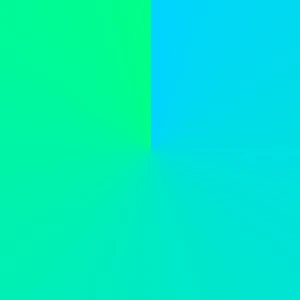
A conic gradient rotates colors around a central point.
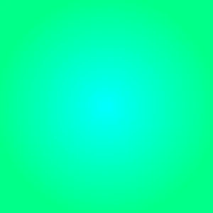
A radial gradient spreads colors outward from a central point.
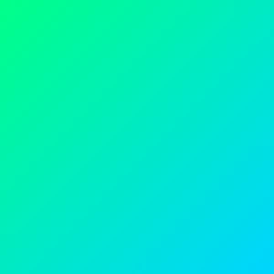
A linear gradient transitions colors smoothly in a single direction.
Noise & Grain Effects
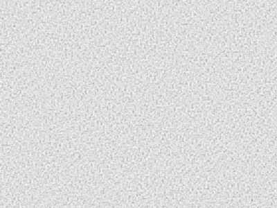
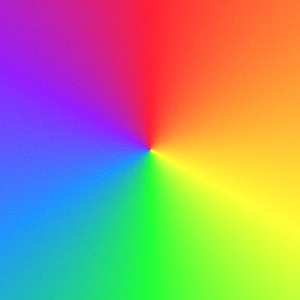
What is Noise?
Noise Grain is a subtle layer of random texture added to gradients to reduce banding and make color transitions feel more natural. It helps gradients look smoother, deeper, and more professional.
CSS Filters
Brightness
Adjusts the overall lightness of the gradient without changing colors.
Contrast
Adjusts the difference between light and dark areas to add depth.
Saturate
Controls color intensity. Lower values make colors muted, higher values make them more vivid.
Hue
Rotates colors along the color wheel without affecting brightness or saturation.
Blur
Softens the gradient by reducing sharp edges and blending color transitions for a smoother, dreamy effect.
Gray Style
Converts all colors into shades of gray.
Sepia
Adds a warm, vintage tone inspired by classic photography.
Invert
Inverts all colors for creative and experimental effects.
CSS Blend Modes
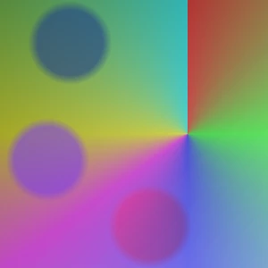
Normal
No blending is applied. The gradient appears exactly as it is.
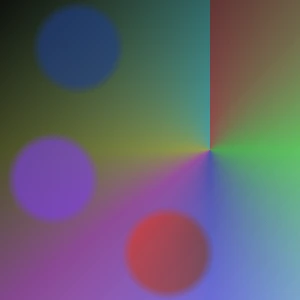
Multiply
Darkens the gradient by multiplying it with layers below. Great for shadows and depth.
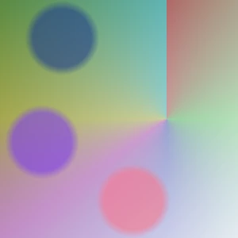
Screen
Lightens the gradient by inverting and combining it with layers below. Perfect for glow effects.
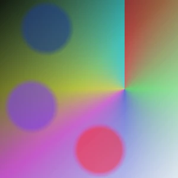
Overlay
Combines Multiply and Screen for higher contrast. Enhances highlights and shadows simultaneously.
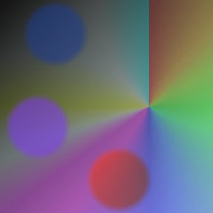
Darken
Keeps the darker values between this gradient and layers below. Useful for dark tones.
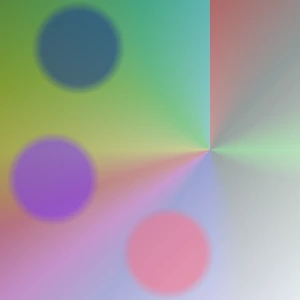
Lighten
Keeps the lighter values between this gradient and layers below. Best for bright overlays.
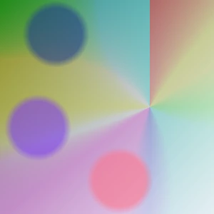
Color Dodge
Brightens and intensifies colors of layers below. Creates strong highlight effects.
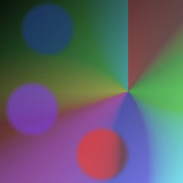
Color Burn
Darkens and deepens colors of layers below. Great for dramatic effects.
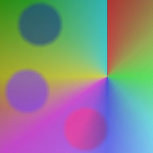
Hard Light
A strong combination of Overlay. Produces bold and high-contrast results.
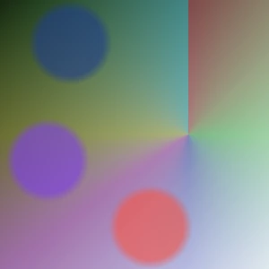
Soft Light
A milder version of Hard Light. Creates subtle and natural lighting.
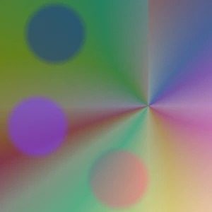
Difference
Shows the difference between this gradient and layers below. Creates high-contrast, experimental effects.
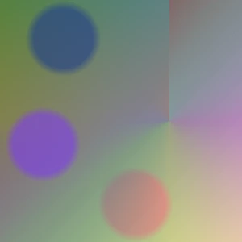
Exclusion
Similar to Difference but softer. Produces subtle color interactions.
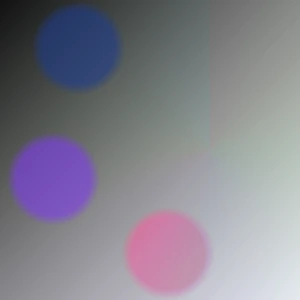
Hue
Applies the gradient's hue to layers below while keeping brightness and saturation unchanged.
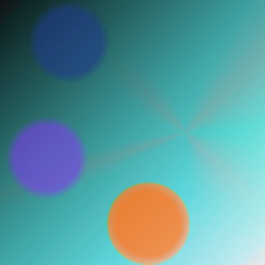
Saturation
Applies the gradient's color intensity to layers below while preserving brightness and hue.
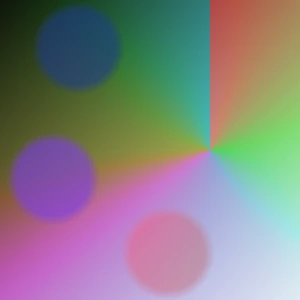
Color
Applies the gradient's color and saturation to layers below while preserving brightness.
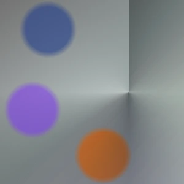
Luminosity
Applies the gradient's brightness to layers below while preserving color and saturation.
Layer Order
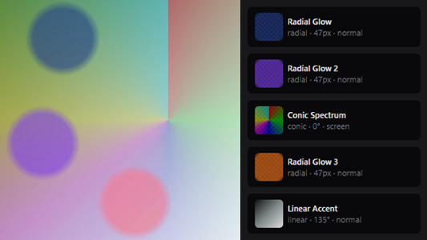
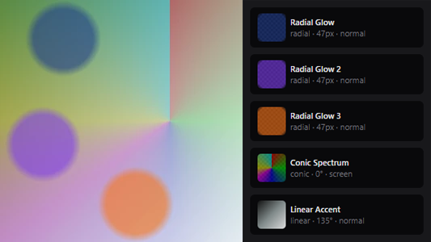
How Layers Work?
Layer order controls visual priority. Changing the stacking order alters how gradients overlap, while blend modes determine how colors blend with underlying layers.
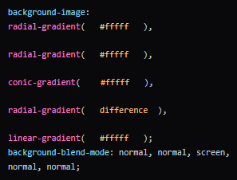
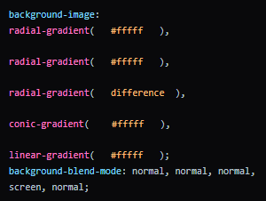
Export & Output
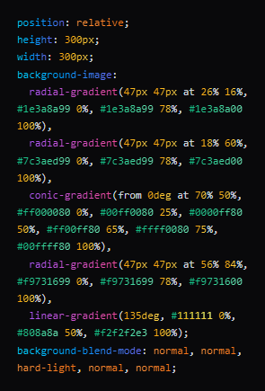
CSS Export
Copy the generated CSS and apply it directly to the target element. The result will match the preview exactly and adapt to the element's size.
.element { background-image: gradient(); }
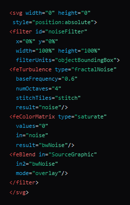
Noise SVG
The Noise SVG is generated as a standalone filter. Simply add it to the SVG document and apply the effect to elements via CSS.
<body>
<div></div>
<svg>
<filter>
...
</filter>
</svg>
</body>
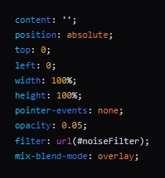
Noise CSS
The Noise effect is generated as a separate layer and is best applied to ::before, ::after, or a child element to achieve a clean and fully controllable result.
.element::before { filter: url(#noiseFilter); }